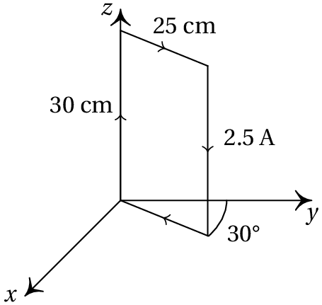
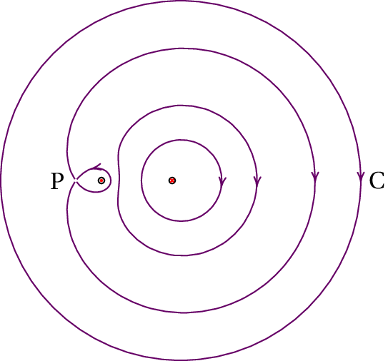

As primeiras memórias de computador que foram construídas, consistiam numa quadrícula de fios de cobre, com pequenos anéis de material ferromagnético em cada interseção entre dois fios. Fazendo passar uma corrente por dois fios perpendiculares, consegue-se magnetizar o anel que está na interseção entre os dois fios; nos outros anéis, a corrente de um único fio não é suficiente para os magnetizar. O estado de magnetização de um anel pode ser detetado pois produz interferências na corrente nos fios que passam pelo anel. Para apagar uma posição na memória (desmagnetizar um dos anéis), faz-se passar corrente nos dois fios correspondentes, em sentido oposto ao sentido usado para magnetizar o anel. O sistema na fotografia está ampliado; os 16 anéis que se mostram permitem armazenar apenas 2 bytes, e fazem parte de uma memoria com capacidade total de 4 quilobytes. Hoje em dia usam-se outras técnicas que permitem obter capacidades um milhão de vezes superior (gigabytes), num espaço muito menor.
A força magnética é também um tipo de força que atua a distância, sem necessidade de um meio nem de contacto, tal como a força gravítica e a força elétrica. Pode ser atrativa ou repulsiva, o que fez com que fosse confundida com a força elétrica desde a época dos gregos em que já eram conhecidas essas duas forças, até 1600, quando William Gilbert a identificou como uma força diferente da elétrica.
Na Grécia antiga, as rochas extraídas das minas da região da Magnésia eram ímanes naturais que deram origem ao termo magnetismo. Um íman tem sempre um polo norte e um polo sul. Aproximando dos polos opostos dois ímanes, surge uma força atrativa entre eles; entre polos semelhantes a força é repulsiva.
Um íman cria um campo magnético à sua volta. O campo pode ser detetado com a agulha de uma bússola, que é também um pequeno íman. A figura 8.1 mostra um íman em forma de barra retangular; o polo norte do íman costuma ser pintado de vermelho. Aproximando uma bússola dos polos do íman, consegue-se ver a direção das linhas de campo magnético; por convenção, as linhas de campo são no sentido em que aponta o polo norte da bússola; em cada ponto define-se um vetor de campo magnético, , com o sentido e direção da orientação da bússola.
As linhas de campo saem do polo norte e entram no polo sul; são semelhantes às linhas de campo elétrico de um dipolo elétrico, mas a diferença é que as linhas de campo magnético não terminam no polo sul, nem começam no polo norte, mas são linhas fechadas que passam pelos dois polos (figura 8.1).
Partindo um íman em vários pedaços menores, em cada pedaço aparecem um polo norte e um polo sul. É impossível obter um íman com unicamente um polo norte sul (não existem monopolos magnéticos). Essa é a maior diferença em relação ao campo elétrico, onde podem existir cargas positivas ou negativas por separado.
No caso do campo elétrico, viu-se que através de uma superfície fechada dentro da qual existe unicamente uma carga pontual (monopolo elétrico), o fluxo é diferente de zero e tem o mesmo sinal da carga. O teorema da divergência implica que no ponto onde se encontra a carga pontual, a divergência do campo elétrico,
tem o mesmo sinal da carga.
No caso do campo magnético, a inexistência de monopolos magnéticos implica que a divergência do campo magnético é nula em qualquer ponto:
A divergência de um campo vetorial é igual ao traço da sua matriz jacobiana, que no caso do campo magnético é:
e o traço é igual à soma dos valores próprios da matriz. Como o traço é nulo, os valores próprios não podem ser todos números reais positivos ou negativos e fica excluída a possibilidade de existirem nós ou focos no campo magnético, isto é, não há pontos onde as linhas de campo convergem em todas as direções, nem pontos onde as linhas de campo saem em todas as direções.
Nos pontos de equilíbrio do campo magnético, o valor nulo do traço da matriz jacobiana implica que os valores próprios só podem ser 3 números reais com sinais diferentes ou um valor próprio nulo e os outros dois imaginários e mutuamente complexos conjugados. Como tal, os pontos de equilíbrio do campo magnético podem ser apenas centros ou pontos de sela.
Por exemplo, num íman retangular como o da figura 8.1 as linhas de campo abrem-se fora de cada polo, curvando-se para passar pelo outro polo; isso implica que o campo decresce rapidamente perto dos polos. Uma forma de conseguir que as linhas de campo não se abram tanto, para obter um campo mais forte, consiste em dobrar a barra em forma de ferradura, para que os dois polos fiquem mais próximos (ver figura 8.2).
A própria Terra é também um íman natural e, por isso, a bússola aponta na direção do polo norte geográfico. As linhas do campo magnético terrestre têm o sentido do polo sul geográfico para o polo norte geográfico. Como tal, o polo norte geográfico é, de facto, o polo sul magnético da Terra, e o polo sul geográfico é o polo norte magnético.
Os materiais que podem ser magnetizados, formando um íman, chamam-se ferromagnéticos; a maior parte das substâncias são diamagnéticas e não podem ser magnetizadas nem interagem com o campo magnético de forma apreciável, excepto se este for muito forte, sentindo então uma força repulsiva. Existem também substâncias ditas paramagnéticas que são ligeiramente atraídas pelos ímanes (os materiais ferromagnéticos são atraídos com maior força).
Um campo magnético também pode ser detetado com um fio com corrente. O campo magnético produz uma força sobre o fio, diretamente proporcional à corrente. A força magnética sobre um pequeno segmento de fio depende também da orientação do fio em relação ao campo magnético; se o fio for paralelo ao campo magnético, a força é nula, e se o fio for perpendicular ao campo, a força é máxima. O módulo da força também é diretamente proporcional ao comprimento do pedaço de fio. A constante de proporcionalidade define o módulo do campo magnético, .
A direção da força é sempre perpendicular ao campo magnético e perpendicular ao fio. O sentido da força segue a regra da mão direita entre o sentido da corrente e o sentido do campo magnético, ou seja, colocando a mão direita sobre o plano da corrente e do campo magnético, como se mostra na figura 8.3, de forma que os dedos rodem desde a corrente até o campo, o polegar indica o sentido da força.
Usando vetores, a expressão da força magnética é a seguinte
em que é o vetor que representa a corrente, na direção tangente ao fio e é o comprimento do segmento de fio.
No caso geral, tem que se integrar a equação 8.4 para obter a força total sobre um fio. No caso particular de um fio retilíneo, com comprimento , num campo magnético uniforme, a força resultante é:
A equação 8.4 permite concluir que, no sistema internacional de unidades, a unidade do campo magnético é . Essa unidade é o tesla, identificado pela letra T. Um campo magnético de 1 T é bastante forte. Uma unidade menor, usada com frequência, é o gauss, identificado com a letra G:
o módulo do campo magnético terrestre, na superfície da Terra, encontra-se entre 0.3 G e 0.6 G, consoante o local.
A força resultante sobre a agulha de uma bússola, devida ao campo magnético da Terra, é quase nula, já que sobre os dois polos magnéticos atuam forças opostas da mesma grandeza. No entanto, se a agulha não estiver alinhada com as linhas do campo magnético terrestre, essas duas forças constituem um binário com momento resultante que se observa facilmente através da rotação da agulha. Qualquer íman, em particular a agulha da bússola, tem um momento magnético, que é um vetor orientado do seu polo sul para o seu polo norte. Um campo magnético externo uniforme produz sobre o íman um binário , igual ao produto vetorial entre o momento magnético do íman e o campo externo:
Figura 8.4: Motor elétrico.
O momento magnético aponta do polo sul para o polo norte do íman e o momento do binário é no sentido que faz rodar até apontar no sentido do campo externo .
O momento do binário produzido pelo campo magnético é o princípio usado nos motores elétricos (figura 8.4). O motor tem uma bobina, que pode rodar à volta de um eixo, dentro de um campo magnético produzido por ímanes fixos. A bobina é um fio condutor enrolado em várias voltas e cada volta completa do fio na bobina designa-se de espira.
No caso de uma espira plana, percorrida por uma corrente , dentro de um campo externo uniforme , pode-se mostrar que o momento do binário resultante sobre a espira satisfaz a equação 8.7, sendo o momento magnético da espira igual a:
onde é a área plana delimitada pela espira e o versor perpendicular à espira, no sentido definido pela regra da mão direita, como mostra a figura 8.5: o polegar da mão direita define o sentido de , quando os outros quatro dedos apontam no sentido da corrente na espira.
O momento magnético de uma bobina é a soma dos momentos magnéticos de todas as suas espiras. Se a bobina tiver espiras, todas com a mesma área , o seu momento magnético é .
A equação 8.7 pode ser generalizada ao caso em que o campo magnético não é uniforme, dividindo a espira em pequenos pedaços com momento magnético infinitesimal e admitindo que o campo em cada espira infinitesimal é constante; a soma de todas as contribuições conduz ao momento do binário total igual ao integral de na superfície delimitada pela espira.
Num motor, os dois terminais da bobina ligam-se a um comutador que roda juntamente com a bobina. Na figura 8.4 pode ver-se o comutador (cilindro com dois setores metálicos independentes) a fazer contato com os dois terminais e ligados a uma f.e.m. externa. Quando a bobina roda, chega até uma posição em que o segmento do comutador que estava em contato com o terminal positivo passa a estar em contato com o terminal negativo e vice-versa, invertendo-se o sentido da corrente na bobina.
O comutador é colocado de forma a que, quando o momento magnético da bobina estiver na direção e sentido do campo magnético do íman (da esquerda para a direita, na figura 8.4), o sentido da corrente seja invertido, fazendo com que o ângulo entre o momento magnético e o campo passe de 0° para 180°. Como tal, a bobina roda constantemente, porque o momento do binário magnético tende sempre a diminuir esse ângulo até 0°.
Uma espira retangular com lados de 25 cm e 30 cm, transporta uma corrente de 2.5 A, no sentido indicado na figura. A espira encontra-se num plano vertical que faz um ângulo de 30° com o plano O e existe um campo magnético uniforme (SI). Calcule o momento do binário produzido pelo campo magnético sobre a espira e diga em que sentido rodará a espira.
Resolução. A área da espira é:
Usando a regra da mão direita, vê-se que o momento magnético da espira é paralelo ao plano O com o sentido indicado na figura ao lado.
O versor normal é portanto:
e o momento magnético da espira é:
O momento do binário é igual ao produto vetorial entre o momento magnético da espira e o campo magnético:
A espira roda até o seu momento magnético apontar na direção e sentido do campo magnético. Consequentemente, a bobina roda à volta dum eixo paralelo ao eixo dos , que passa pelo seu centro de massa, de forma a que o ângulo inicial de 30° aumente até 90°.
A força produzida pelo campo magnético sobre um fio com corrente é o resultado das forças que atuam sobre cada uma das cargas de condução, devido ao seu movimento (figura 8.6).
Quando não há corrente, a velocidade média das cargas de condução é nula e a força magnética resultante também é nula. Quando a corrente aumenta no condutor, a velocidade média das cargas de condução aumenta em proporção direta à corrente e a força sobre cada carga de condução também aumenta em proporção direta. A força magnética sobre cada carga de condução e, de forma geral, a força magnética sobre qualquer partícula com carga é dada pela equação:
em que é a velocidade da partícula e é o campo magnético no ponto onde se encontra a partícula. Como tal, a força magnética é diretamente proporcional ao módulo da velocidade da partícula e à sua carga. Se a velocidade for paralela ao campo, a força é nula, e se a velocidade for perpendicular ao campo, a força tem intensidade máxima.
A força magnética é perpendicular à velocidade da partícula e perpendicular ao campo. O sentido da força determina-se usando a regra da mão direita, tal como foi feito na figura 8.3 para um fio com corrente, mas tendo em conta que o vetor corrente é no mesmo sentido da velocidade da partícula, se a sua carga for positiva, ou no sentido oposto, se a sua carga for negativa.
Numa região onde existe um campo elétrico, , e um campo magnético, , a força sobre uma partícula com carga e velocidade é
Em geral, a força resultante pode ter componentes nas direções tangencial e normal (ver figura 8.7). A força magnética é sempre no plano perpendicular à direção tangencial. Qualquer mudança de energia cinética é devida ao campo elétrico já que o campo magnético não realiza trabalho, por produzir sempre uma força perpendicular ao deslocamento.
As linhas de campo de um campo magnético uniforme são retas paralelas e é habitual desenhá-las equidistantes entre si, para indicar a uniformidade do campo. Se o campo uniforme for perpendicular à folha, a intersecção de cada linha de campo com o plano da folha será representada ou com um ponto ou com um x. Um ponto representa uma linha de campo que aponta para cá da folha e um x corresponde a uma linha de campo que aponta para lá da folha; por exemplo, na figura 8.8 está representado um campo magnético uniforme, perpendicular à folha e apontando para lá da folha.
Considere-se uma partícula com carga , que se desloca num campo magnético uniforme, não havendo outras forças presentes (figura 8.8). Se a velocidade inicial da partícula for perpendicular ao campo, o módulo da força magnética é .
Como em cada instante a força é perpendicular à velocidade, e o modulo da velocidade permanece constante (a força magnética não altera a energia cinética), o resultado é um movimento circular uniforme em que a força centrípeta, é a força magnética . O raio da trajetória e a velocidade angular do movimento são então:
As partículas com carga negativa rodam em sentido oposto às partículas com carga positiva e no caso da figura 8.8, a carga da partícula é negativa.
Se a velocidade inicial não for perpendicular ao campo, a componente da velocidade no sentido do campo permanece constante, enquanto que a componente perpendicular roda, com a velocidade angular dada pela equação 8.11. A sobreposição do deslocamento uniforme, na direção do campo, com o movimento circular uniforme no plano perpendicular, produz um movimento helicoidal que segue as linhas de campo magnético. O raio da hélice é menor nas regiões onde o campo é mais forte e as linhas de campo estão mais próximas umas das outras.
Um campo elétrico uniforme e um campo magnético uniforme, perpendiculares entre si, servem para selecionar partículas com uma determinada velocidade, como no dispositivo da figura 8.9, chamado filtro de velocidades. Na figura 8.9 o campo elétrico aponta para cima, e o campo magnético aponta para cá da folha.
Uma partícula com carga positiva e velocidade para a direita fica sujeita a uma força elétrica para cima, e uma força magnética de módulo , para baixo. Consequentemente, a força resultante é nula se o módulo da velocidade for exatamente igual a
Coloca-se uma barreira no filtro, de maneira que unicamente as partículas que se deslocam em linha reta (com velocidade ) logrem ultrapassar a barreira.
O campo magnético produz forças sobre os condutores com corrente e os condutores com corrente também produzem campos magnéticos. Um cabo condutor que transporta corrente produz linhas de campo magnético à sua volta. O campo produzido por um condutor com corrente pode ser calculado por meio da lei de Biot-Savart, que não é estudada aqui. No caso do campo elétrico, viu-se que para alguns casos simples pode usar-se a lei de Gauss para calcular o campo. A lei análoga à lei de Gauss, para o campo magnético, é a lei de Ampère que estabelece que
O integral de linha do campo magnético, em qualquer curva fechada, é proporcional à corrente elétrica total em todos os condutores que atravessam o interior da curva.
A expressão matemática da lei de Ampère é
onde C é uma curva fechada no espaço, é uma constante magnética e é a corrente total de todos os condutores que atravessam o interior de C. Para calcular a corrente total , somam-se as correntes em todos os condutores que cortam a superfície no interior de C, atribuindo sinal positivo às correntes que passam no sentido da regra da mão direita, em relação à direção em que é percorrida a curva C no integral e sinal negativo para as correntes no sentido oposto.
O valor da constante magnética é
em unidades de G cm/A, o valor da constante é 0.1. A equação 8.13 é válida no vácuo; Num meio diamagnético, deve ser substituída por , onde é a permeabilidade magnética do meio.
Um caso em que a lei de Ampère é útil para calcular o campo, é o de um fio retilíneo, muito comprido. Considere-se uma curva C que é uma circunferência de raio , perpendicular ao fio, com centro no eixo do fio. Dada a simetria do sistema, as linhas de campo ou têm a direção radial, ou são tangentes à circunferência C; se tivessem a direção radial, o integral de linha do campo ao longo de C seria nulo, o que não é possível, de acordo com a lei de Ampère, pois a corrente total através de C não é nula.
Como tal, as linhas de campo magnético do fio têm de ser circunferências perpendiculares ao fio e com centro no eixo do fio, como se mostra na figura 8.10. O sentido do campo deve seguir a regra da mão direita, em relação à corrente corrente, para que o integral de linha de tenha o mesmo sinal da corrente. Ou seja, colocando o polegar da mão direita no sentido da corrente, os outros dedos indicam o sentido das linhas de campo magnético.
Como o campo magnético é tangente à curva C e tem módulo constante, o integral de linha do campo é:
De acordo com a lei de Ampère, o integral tem de ser igual a , o que implica que o campo magnético ao longo da curva C deve ter módulo
onde é a distância desde o eixo do fio ao ponto onde se calcula o campo.
O campo magnético de um sistema com várias correntes obtém-se somando vetorialmente os campos produzidos por cada corrente. Para um sistema de fios paralelos, a equação 8.16 conduz à seguinte expressão para as componentes do campo, no plano perpendicular aos fios:
onde é a corrente no fio número , com sinal positivo se for no sentido positivo do eixo dos , ou sinal negativo no caso contrário e ( , ) são as coordenadas do ponto onde o fio número corta o plano O .
Quando o fio não é retilíneo, deixa de haver simetria e a lei de Ampère não permite calcular o campo magnético; no entanto, as linhas de campo são parecidas com as linhas do fio retilíneo. Por exemplo, a figura 8.11 mostra as linhas de campo de uma espira circular com corrente, no plano que contém o eixo da espira; as linhas de campo magnético neste exemplo são parecidas com as obtidas com dois fios perpendiculares à folha, com correntes de sentidos opostos.
A figura representa as linhas de campo magnético de dois fios retilíneos (perpendiculares à folha) com correntes e . A corrente no fio do lado esquerdo é A. Sabendo que a distância entre os dois fios é 6 cm e a distância entre o fio do lado esquerdo e o ponto P é de 2 cm, calcule o integral de linha do campo magnético, , ao longo da circunferência C indicada na figura.
Resolução. O integral do campo magnético, em qualquer percurso fechado, pode ser calculado pela lei de Ampère:
A corrente total através da circunferência C é igual a , já que o desenho das de campo permite concluir que é no sentido positivo de C (para lá da folha) e é no sentido oposto. Para calcular recorre-se ao facto de o campo total ser nulo no ponto P; isso implica que no ponto P os campos produzidos pelos dois fios têm o mesmo módulo. Como o módulo do campo de cada fio é diretamente proporcional à corrente e inversamente proporcional à distância, e como as distâncias dos fios até P são 2 cm e 8 cm, obtém-se a seguinte relação:
e, portanto, é igual a 12 A e A. Admitindo que não existe qualquer meio à volta dos fios, usa-se a constante na lei de Ampère e obtém-se:
Cada condutor com corrente cria um campo magnético que produz forças magnéticas sobre outros condutores com corrente. Como tal, entre dois condutores com corrente existem forças magnéticas. Calculando o sentido do campo produzido por cada condutor e o sentido da força que esse campo exerce sobre o segundo condutor, conclui-se que:
A força magnética entre dois fios retilíneos e paralelos, percorridos por correntes, é atrativa se as correntes têm o mesmo sentido ou repulsiva se as correntes têm sentidos opostos.
A figura 8.12 mostra os dois casos em que as correntes têm o mesmo sentido (a) ou sentidos opostos (b).
Se ambos fios, retilíneos e paralelos, têm o mesmo comprimento , muito maior que a distância entre eles, o campo de cada um pode ser calculado pela equação obtida na secção anterior para o campo magnético de um fio retilíneo; por exemplo, o campo do fio 1 nos pontos onde se encontra o fio 2 tem módulo:
e a força que esse campo exerce sobre o fio 2 obtém-se a partir do produto vetorial . Como tal, o módulo da força magnética entre os dois fios é
(Para conferir a sua resposta, clique nela.)


Perguntas: 1. D. 2. A. 3. A. 4. A. 5. E.
Problemas
(clique para continuar)
(clique para continuar)
(clique para continuar)
(clique para continuar)
(clique para continuar)
(clique para continuar)
(clique para continuar)
(clique para continuar)
(clique para continuar)
(clique para continuar)
(clique para continuar)
(clique para continuar)
(clique para continuar)
(clique para continuar)
(clique para continuar)
(clique para continuar)
(clique para continuar)
(clique para continuar)
(clique para continuar)
(clique para continuar)
(clique para continuar)
(clique para continuar)
(clique para continuar)
(clique para continuar)
(clique para continuar)